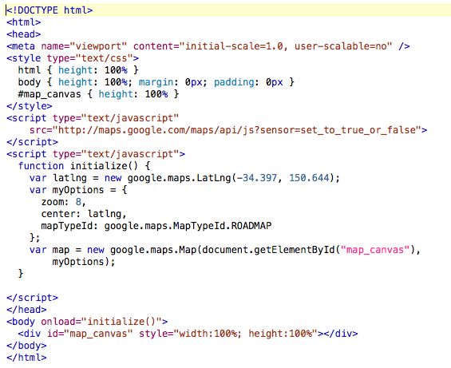

Having direct access to the API allows programmers to exert control over a number of aspects include the general configuration and layout of the map, as well as create new markers and draw on the map surface. The API covers such aspects as:
In practice, there are several APIs rather than a single one. In this
module, we concentrate on the JavaScript API, using version 3 of that API.
The
older version 2 API is also documented, and many maps on the web still make use
of it. There is also an ActionScript API, which allows maps to be displayed
(and interacted with) using the Adobe Flash plugin, and a static API which
allows simple maps to be created without using JavaScript. There are also
separate APIs for Google Earth, and for various spatial services (such as
geocoding and route finding).
The figure below shows a sample piece of code distributed by Google that
demonstrates how to use the JavaScript API; this document embeds a map focussed
on Sydney, which fills the whole of the browser window.
In the next part, you will use the code below to create your first mash-up.

The file is a typical HTML document, which contains some JavaScript. Like
all HTML documents, it contains two sections - a HEAD section and a BODY
section. The BODY section is very simple - it contains a single element, a DIV
that uses an optional style parameter to fill the whole window,
and has an ID. As we saw last week, giving an element an ID allows use to
manipulate it using JavaScript. The BODY section also has a JavaScript function
('initialize()') linked to the onload event - when
the page has finished loading, this function will be triggered.
A full description of this example is given at http://code.google.com/apis/maps/documentation/javascript/tutorial.html, but an explanation will also be given here.
Firstly, note that the file commences with <!DOCTYPE
html>. This defines the document type, in particular a specific
variant of HTML. As HTML has evolved over the years, various standards have
been used; defining a specific document type should ensure that the browser
renders it correctly.
The HEAD section of the document contains four elements: a META tag, a STYLE block and two SCRIPT blocks. The META tag is used here to define characteristics of how the page should be displayed (in this case, full-screen and not resizeable) - and is significant for display on mobile devices. In this module, we concentrate on traditional desktop and laptop displays, and thus do not need to worry about the viewport. The STYLE block contains CSS styling hints, and again is used to ensure that the map fills the whole window.
The two SCRIPT blocks are the most significant parts. The first block loads
the API library into the browser, and thus provides the functionality for our
maps. The block contains a src parameter, specifying a location
from which the library is to be loaded. In examples shown in Unit 3, we used
the src parameter to load JavaScript from a local file (for ease of code
maintenance), but it is quite possible - as here - to use a remote location.
The content of the src parameter is shown in the Figure as:
"http://maps.google.com/maps/api/js?sensor=set_to_true_or_false"
The location of the library is thus the URL
'http://maps.google.com/maps/api/js', but we also provide a
parameter, sensor. This is shown (as on the Google web site) as
'set_to_true_or_false', and it must be set to one of these two values, or the
library will not load. The sensor parameter indicates whether or not we are
going to provide a current position by means of some sort of sensor (for
example a GPS receiver). In all cases, provision of location information is
something done by the browser, using an emerging standard, the W3C Geolocation standard.
In some cases, browsers might run on devices such as mobile handsets that have
specific location finding hardware, however a number of recent releases of
standard browsers also support the Geolocation standard, and can estimate the
current location given the host computer's IP address.
Update Feb 2015: In the latest revision of the API (which occurs each Feb!), the sensor parameter is now obsolete. However, I've kept these sections in as it is likely that you may come across this in examples on the web.
The second 'script' block, which starts on the following line, defines a
function - initialize() - which is run
after the page is loaded. The function sets some variables, and then creates a
map object. The first variable declared is called latlng, and as
the name might suggest, it is a latitude-longitude position. In the
introductory material on JavaScript, we looked at declaring basic variables
such as numbers, strings and arrays. In this example, we create a new instance
of an object that is defined in the JavaScript library loaded in the first
script block. That library defined (and created) an object called
google, which had as one of its properties an object called
maps. That object in turn, had a property called
LatLng. Using the nested approach to referencing objects in
JavaScript, we can thus refer to this object type as
google.maps.LatLng. You will recall that JavaScript is case
sensitive, and thus the correct capitalisation is required. When creating a new
instance of this LatLng object, we can supply a latitiude and longitude as
parameters.
The second entity created (an object literal rather than an array - although
we do not need to worry about the distinction here) is an array called
myOptions, which will be used to supply customisation options to
the maps. This is defined using a compact notation known as JSON - JavaScript
Object Notation. Three characteristics are given: an initial zoom level, a
center (using the latlng location that we have just defined) and a mandatory
map type. In this case, the type is ROADMAP, which is the standard Google Maps
map view. The map type is defined by refering to one of the properties of
google.maps.MapTypeId; other types
include SATELLITE, HYBRID and TERRAIN.
Finally, the second script block creates the new map object, using the statement:
var map = new google.maps.Map(document.getElementById("map_canvas"),myOptions);
A new object, called 'map', is created as an instance of the object
google.maps.Map. Two parameters are supplied for the construction
of this map; firstly, a node in the HTML document, and secondly the set of map
options that has been created in the preceding statement. The node is that part
of the document which will be modified to display the map; this is the DIV
section in the BODY part of the HTML document. We refer to this using the
standard JavaScript method document.getElementById().